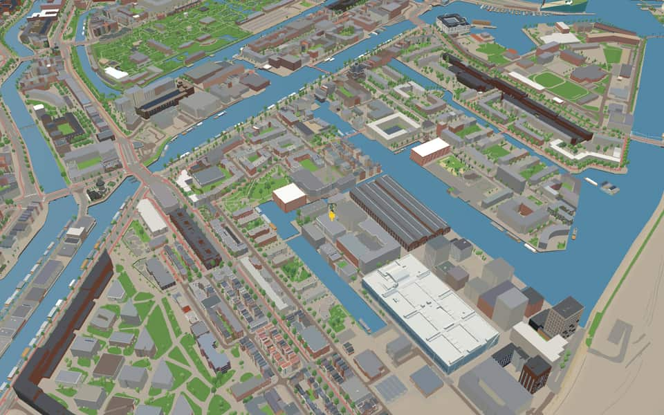
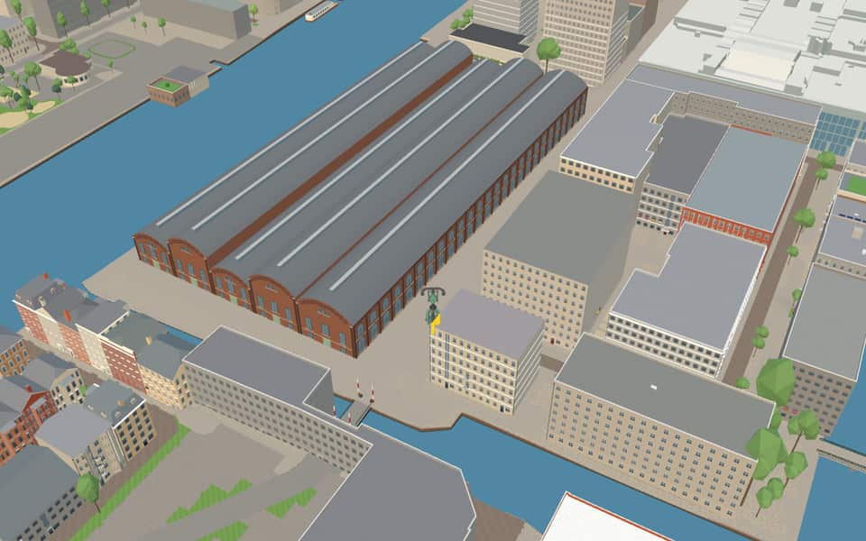
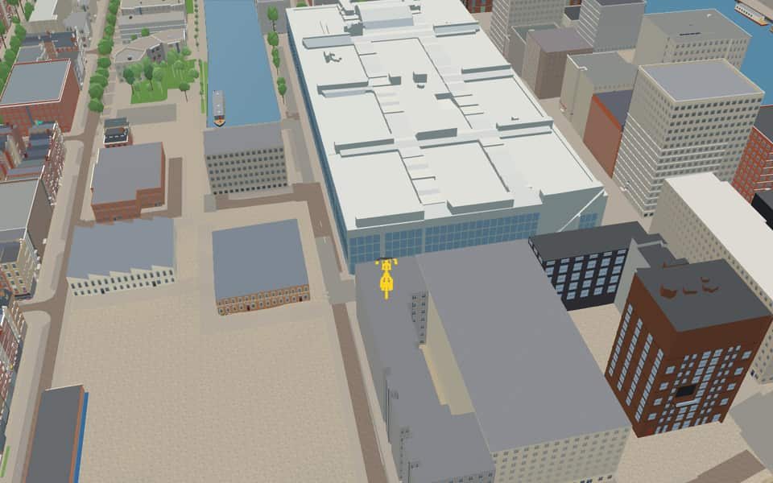
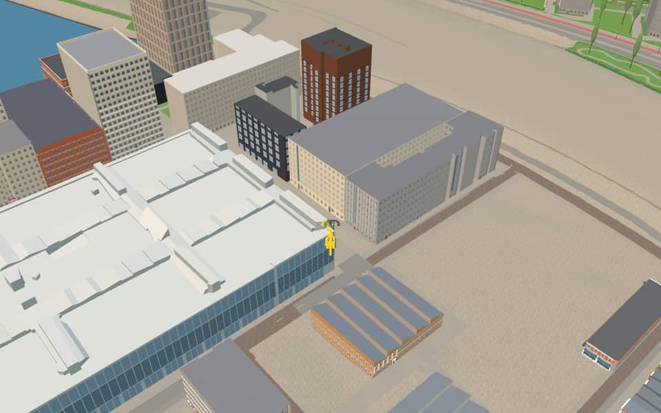

Neighbourhood in Oostelijke Eilanden
Oostenburg
Oostenburg is the easternmost of the three Eastern Islands, built out into the IJ in the second half of the 17th century. The Wittenburgervaart separates it from Wittenburg to the west, and the partly filled-in Oostenburgervaart from the Czaar Peterbuurt to the east. nl.wikipedia.org
The name. The name matches Oostenburgerpark, in the area. Oostenburg was the easternmost of the three islands (with Kattenburg and Wittenburg) brought within the city in the expansion of 1658. Laying out the streets and building began in 1664. At first there were three streets from the canal, named after their position Oostenburgervoorstraat, -middenstraat and -achterstraat (front, middle and back streets). In the first half of the twentieth century the Oostenburgerachterstraat was closed to public traffic for the expansion of the Werkspoor company, and it was abolished in 1957. The Oostenburgermiddenstraat was abolished in 1985; the Compagniestraat now runs there. Gemeente Amsterdam street-name register


In the game
Frames from a ride through Oostenburg.




6 more photos of Oostenburg

.jpg){kind=link}


.jpg){kind=link}


Built here
Buildings modelled one by one for the ride.
Van Gendt Hallen
Jacob Bontiusplaats 9 offices
Oostenburgermiddenstraat 228
- No picture yet
VOC-kade 600
Did you know
Trivia the ride can show you here.
- In 1910 the Vulcanus, the world's first diesel-powered tanker, was built at the NSM yard on Oostenburg. Wikipedia (translated from Dutch)
- Halls 4 and 5 of the Van Gendt Hallen partly burned down in 1922 and were rebuilt to the original design. Wikipedia (translated from Dutch)
- Van Gendt HallenHalls four and five partially burned down in 1922 before being restored to their original design. nl.wikipedia.org
- Van Gendt HallenLarge light covers span the entire length of each hall. nl.wikipedia.org
- Nieuwe VaartResidents could isolate the island by lifting the Kattenburger bridge during the 1787 Bijltjesoproer riot. en.wikipedia.org
- Nieuwe VaartIn 1917, stone-throwing women followed a potato barge through the canal before police fired into the air. en.wikipedia.org
- Nieuwe VaartThe canal was dug in 1649 to fix silting problems caused by the island crossing much of the IJ. en.wikipedia.org
- Nieuwe VaartA houseboat association formed in 2011 after city plans threatened to remove most berths from the western section. en.wikipedia.org
- OesjesduikerThe Oesjesduiker is named after a butcher who once operated in this location. nl.wikipedia.org
- OesjesduikerA wooden bridge at this spot was reinforced in 1905 when the tram arrived. nl.wikipedia.org
- OostenburgervaartBoth original ends of the canal were later filled in, leaving only a short channel to the Wittenburgervaart. en.wikipedia.org
- OostenburgervaartA warehouse completed in 1721 collapsed in 1822 and was replaced by a smaller structure. en.wikipedia.org
- OostenburgervaartFour-story apartment buildings along Conradstraat face away from the canal's southeast bank. en.wikipedia.org
- WittenburgervaartRobert Jasper Grootveld's Tire Boat artwork was placed on stilts in the water in 2012. en.wikipedia.org
1 more fact
- WittenburgervaartWater sports clubs Albatros and De Oostvaarders maintain a marina on the north bank. en.wikipedia.org
Names on the map
Where the canal, bridge and street names come from.
Canals and water
- Nieuwe VaartNamed after the Nieuwe Vaart, dug around 1650 to link the IJ and the Oosterdok by the shortest possible route with the mouth of the IJ at Zeeburg.
- OesjesduikerThe name of this culvert comes from the sign 't Osje (the little ox) that once hung at a butcher's on the corner of the Oostenburgergracht.
- OostenburgerdwarsvaartOostenburg was the easternmost of the three islands (with Kattenburg and Wittenburg) brought within the city in the expansion of 1658. Laying out the streets and building began in 1664. At first there were three streets from the canal, named after their position Oostenburgervoorstraat, -middenstraat and -achterstraat (front, middle and back streets). In the first half of the twentieth century the Oostenburgerachterstraat was closed to public traffic for the expansion of the Werkspoor company, and it was abolished in 1957. The Oostenburgermiddenstraat was abolished in 1985; the Compagniestraat now runs there.
- OostenburgervaartOostenburg was the easternmost of the three islands (with Kattenburg and Wittenburg) brought within the city in the expansion of 1658. Laying out the streets and building began in 1664. At first there were three streets from the canal, named after their position Oostenburgervoorstraat, -middenstraat and -achterstraat (front, middle and back streets). In the first half of the twentieth century the Oostenburgerachterstraat was closed to public traffic for the expansion of the Werkspoor company, and it was abolished in 1957. The Oostenburgermiddenstraat was abolished in 1985; the Compagniestraat now runs there.
- WittenburgervaartOne of the three eastern islands (with Kattenburg and Oostenburg), laid out in the second half of the seventeenth century and built up with shipyards and houses from the start. One of the first yards was that of Jan Witheyn (1610-1662), founded in 1657. This is very probably where the name Wittenburg comes from.
Bridges
- OesjesduikerThe name of this culvert comes from the sign 't Osje (the little ox) that once hung at a butcher's on the corner of the Oostenburgergracht.Bridge 114: a reinforced concrete bridge for road traffic, dated 1952 in the city's bridge register.
- ZonnewendebrugThe Zonnewendebrug is a bridge on Oostenburg in the Centrum district of Amsterdam. Its design took account of the fall of light and shadow: the 3D-printed railing makes the bridge's perspective change with the sunlight during the day and as you walk across it. The bridge has number 2106, referring to the longest day of the year, 21 June: the solstice (zonnewende).
Streets
- AdmiraliteitstraatIn the Republic of the Seven United Netherlands there were five boards of supreme commanders for naval affairs (admiralties), one of which was in Amsterdam.
- BoulevardpadWith the name Boulevard, the neighbourhood that proposed it was thinking of the Eilandenboulevard, a local name for the Kattenburgergracht, Wittenburgergracht and Oostenburgergracht, which were widened and rebuilt into a broad main road around 1960.
- CompagniestraatNamed after the Dutch East India Company (VOC), which from 1661 had its arsenal, shipyard and ropewalk built here on Oostenburg. The building at Oostenburgergracht 79 still recalls this. The street was laid out over the former Oostenburgermiddenstraat, which disappeared as a result.
- ConradstraatFrederik Willem Conrad (1800-1876), hydraulic engineer. He designed several hydraulic works in the Netherlands and the plans for cutting through the Isthmus of Suez, as well as the first railway station at the Haarlemmerpoort (1839).
- CruquiusstraatNicolaas Samuel Cruquius (or Kruik) (1678-1754), hydraulic engineer, who drew up a plan to drain the Haarlemmermeer.
- Eerste CoehoornstraatMenno Baron van Coehoorn (1641-1704), fortress builder, engineer-general of fortifications.
- EzelsbrugThe name of this bridge (donkey bridge) recalls the hard struggle the residents had to wage against the car lobby, which would rather have seen bridges for ordinary traffic here. They often felt like donkeys that kept stumbling over the same stone. The name also refers to the memory aid called an ezelsbruggetje (a mnemonic). The bridge was officially opened on 14 March 1987 by having a donkey walk across it.
- Frans de WollantstraatAn eighteenth-century Dutch military engineer who made his name in Russia under Catherine the Great as a designer of hydraulic works and builder of the city of Odessa.
- Isaac TitsinghkadeLawyer (1744-1812), envoy in China and Japan, and also a physician, merchant, diplomat, philosopher and collector of Japonica. He worked for the Dutch East India Company for 32 years.
- Jacob BontiusplaatsPhysician in the service of the Dutch East India Company (1592-1631). He studied the flora and fauna around Batavia (now Jakarta), the administrative centre of the former colony of the Dutch East Indies.
- Jan KiststraatA skipper (died 1740) who sailed a transport barge for the Dutch East India Company (VOC).
- LijndenstraatFrederik Baron van Lijnden van Hemmen (1761-1845), fortification and hydraulic engineer and member of parliament, who wrote a treatise (in 1821) on draining the Haarlemmermeer.
20 more streets with a story
- Nieuwe OostenburgerdwarsstraatOostenburg was the easternmost of the three islands (with Kattenburg and Wittenburg) brought within the city in the expansion of 1658. Laying out the streets and building began in 1664. At first there were three streets from the canal, named after their position Oostenburgervoorstraat, -middenstraat and -achterstraat (front, middle and back streets). In the first half of the twentieth century the Oostenburgerachterstraat was closed to public traffic for the expansion of the Werkspoor company, and it was abolished in 1957. The Oostenburgermiddenstraat was abolished in 1985; the Compagniestraat now runs there.
- Nieuwe OostenburgerstraatOostenburg was the easternmost of the three islands (with Kattenburg and Wittenburg) brought within the city in the expansion of 1658. Laying out the streets and building began in 1664. At first there were three streets from the canal, named after their position Oostenburgervoorstraat, -middenstraat and -achterstraat (front, middle and back streets). In the first half of the twentieth century the Oostenburgerachterstraat was closed to public traffic for the expansion of the Werkspoor company, and it was abolished in 1957. The Oostenburgermiddenstraat was abolished in 1985; the Compagniestraat now runs there.
- OesjesduikerThe name of this culvert comes from the sign 't Osje (the little ox) that once hung at a butcher's on the corner of the Oostenburgergracht.
- OostenburgerdwarsstraatOostenburg was the easternmost of the three islands (with Kattenburg and Wittenburg) brought within the city in the expansion of 1658. Laying out the streets and building began in 1664. At first there were three streets from the canal, named after their position Oostenburgervoorstraat, -middenstraat and -achterstraat (front, middle and back streets). In the first half of the twentieth century the Oostenburgerachterstraat was closed to public traffic for the expansion of the Werkspoor company, and it was abolished in 1957. The Oostenburgermiddenstraat was abolished in 1985; the Compagniestraat now runs there.
- OostenburgergrachtOostenburg was the easternmost of the three islands (with Kattenburg and Wittenburg) brought within the city in the expansion of 1658. Laying out the streets and building began in 1664. At first there were three streets from the canal, named after their position Oostenburgervoorstraat, -middenstraat and -achterstraat (front, middle and back streets). In the first half of the twentieth century the Oostenburgerachterstraat was closed to public traffic for the expansion of the Werkspoor company, and it was abolished in 1957. The Oostenburgermiddenstraat was abolished in 1985; the Compagniestraat now runs there.
- OostenburgermiddenstraatOostenburg was the easternmost of the three islands (with Kattenburg and Wittenburg) brought within the city in the expansion of 1658. Laying out the streets and building began in 1664. At first there were three streets from the canal, named after their position Oostenburgervoorstraat, -middenstraat and -achterstraat (front, middle and back streets). In the first half of the twentieth century the Oostenburgerachterstraat was closed to public traffic for the expansion of the Werkspoor company, and it was abolished in 1957. The Oostenburgermiddenstraat was abolished in 1985; the Compagniestraat now runs there.
- OostenburgerparkOostenburg was the easternmost of the three islands (with Kattenburg and Wittenburg) brought within the city in the expansion of 1658. Laying out the streets and building began in 1664. At first there were three streets from the canal, named after their position Oostenburgervoorstraat, -middenstraat and -achterstraat (front, middle and back streets). In the first half of the twentieth century the Oostenburgerachterstraat was closed to public traffic for the expansion of the Werkspoor company, and it was abolished in 1957. The Oostenburgermiddenstraat was abolished in 1985; the Compagniestraat now runs there.
- OostenburgervoorstraatOostenburg was the easternmost of the three islands (with Kattenburg and Wittenburg) brought within the city in the expansion of 1658. Laying out the streets and building began in 1664. At first there were three streets from the canal, named after their position Oostenburgervoorstraat, -middenstraat and -achterstraat (front, middle and back streets). In the first half of the twentieth century the Oostenburgerachterstraat was closed to public traffic for the expansion of the Werkspoor company, and it was abolished in 1957. The Oostenburgermiddenstraat was abolished in 1985; the Compagniestraat now runs there.
- Pieter GoosstraatMapmaker (c. 1616-1675) in the service of the VOC, whose work included small-scale sea charts on which the course to the Dutch East Indies could be plotted.
- RumphiusstraatGeorgius Everhardus Rumphius (1627-1702), born in Germany, who in 1652 sailed on a VOC ship. From 1662 he began systematic research into the flora and fauna of the Indonesian island of Ambon.
- Tonia StieltjespleinTonia Stieltjes (1881-1932) was born in the Czaar Peterstraat, the daughter of an Afro-Surinamese man born in slavery. She worked to improve the working and living conditions of domestic staff and is regarded as the first Black woman trade unionist. She also lives on in the many portraits for which she posed as a model.
- TouwbaanThe street was laid out on the site of the ropewalks of the Dutch East India Company in the seventeenth and eighteenth centuries.
- TouwbaanparkThe street was laid out on the site of the ropewalks of the Dutch East India Company in the seventeenth and eighteenth centuries.
- Tweede LeeghwaterstraatJan Adriaanszoon Leeghwater (1575-1650), hydraulic engineer. As overseer and millwright he worked on many land reclamations, including the Beemster. He drew up the first plan to drain the Haarlemmermeer.
- Van ReedestraatHendrik Adriaan van Reede tot Drakenstein (1636-1693), of a noble Utrecht family, who left for Asia in 1656 in the service of the VOC, where he studied the tropical flora to improve the supply of medicines.
- VOC-kadeThe Dutch East India Company (VOC), founded in 1602 for the East Indies trade and run by seventeen directors (the Heeren XVII). From Batavia, its administrative centre in Asia, it built up a network of trading posts. In 1799 the state took over the company.
- Willem ParelstraatChief boatswain at the VOC shipyard in Amsterdam.
- Willem Theunisse BlokstraatMaster carpenter, who built ships.
- ZeemagazijnkadeNamed after the VOC's warehouse (the Zeemagazijn) on Oostenburg.
- ZonnewendebrugThe Zonnewendebrug is a bridge on Oostenburg in the Centrum district of Amsterdam. Its design took account of the fall of light and shadow: the 3D-printed railing makes the bridge's perspective change with the sunlight during the day and as you walk across it. The bridge has number 2106, referring to the longest day of the year, 21 June: the solstice (zonnewende).
1 other street without a recorded story
Nieuwe Oostenburgervoorstraat